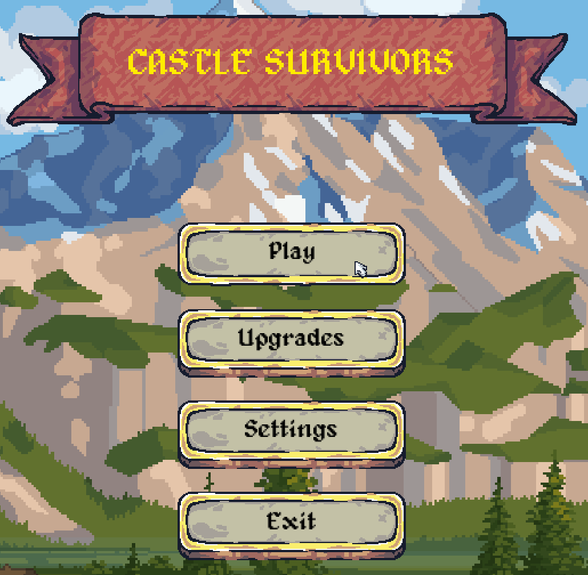
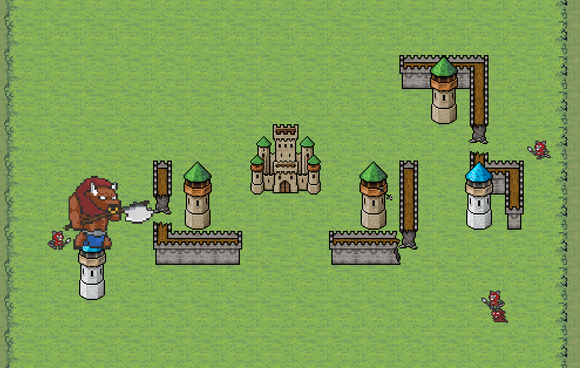
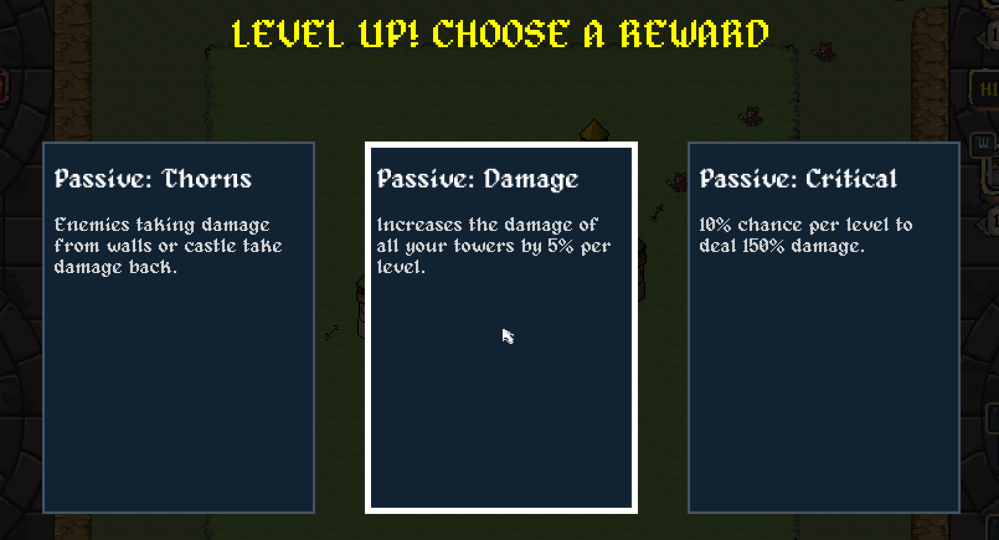
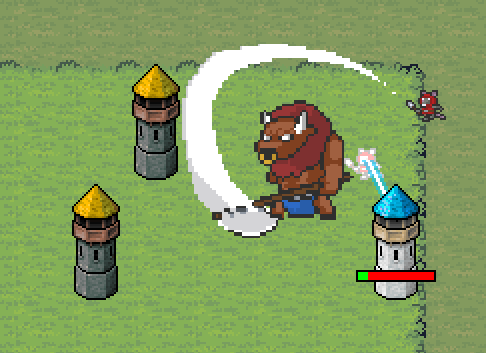

About the game
Welcome to Castle Survivors, an explosive mix of the Tower Defense and Survivors genres! Prepare to hold the line against relentless waves of enemies in a game where strategy and adaptation are your best weapons.
Build, protect, survive!
Discover a wide variety of ways to defend your central castle. Discover a wide variety of ways to defend your central castle. You can rely on classic arrow towers, electrifying towers to fry the horde with bouncing lightnings, or even a holy tower that summons a divine hammer to smite your enemies into oblivion. However, firepower is not everything. You must also strategically build walls to block the advancing horde, stall their progress, and protect your precious towers and castle.
Create your build
Shape your loadout on the fly with random reward cards every time you level up. These cards unlock devastating new towers and crucial passive upgrades that become vital as the waves get tougher. You can plan your ultimate build in advance, or embrace the chaos and make every playthrough entirely unique.
Increasing difficulty
The difficulty scales relentlessly. What begins as a few simple monsters quickly escalates into a massive horde. Over time, new enemy types with tricky mechanics will emerge, forcing you to constantly rethink your strategy. Survive for as long as you can, but brace yourself for the final minutes. The monsters will throw absolutely everything they have at you to bring your castle down.
Meta-progression
Death is just part of the journey. Even if you fall, you will always earn gems to spend on permanent upgrades. With every run, you will grow so powerful that the monsters will be the ones afraid of you.



